About Me
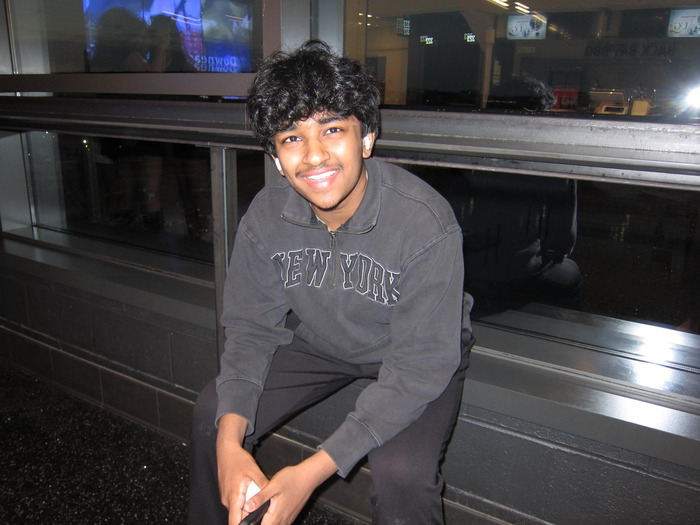
Hey, my name is Pranav Gundu, and I’m a junior at the Massachusetts Academy of Math and Science at WPI (Mass Academy). I’ve lived in Shrewsbury, Massachusetts, my entire life, and before attending Mass Academy, I attended Shrewsbury High School for 9th and 10th grades. I’ve been interested in computer science and mathematics from a young age, and most of my free time outside of school goes toward one of those interests in some form. Attending Mass Academy is simply an extension of those interests.
Robotics
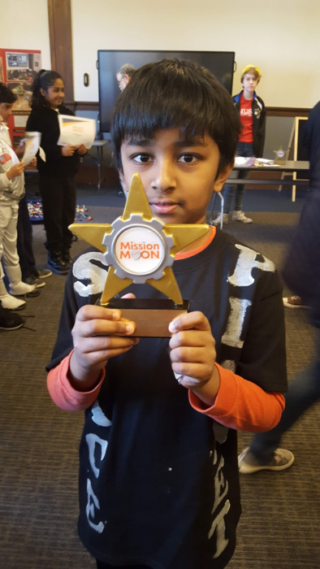
I’ve been part of the FIRST Robotics community for most of my life, starting with FIRST LEGO League (FLL) in 3rd grade. During the early part of my robotics journey, I worked on everything from presentations to building to coding, albeit nothing impressive.
I then moved into FIRST Tech Challenge (FTC), competing throughout middle school.
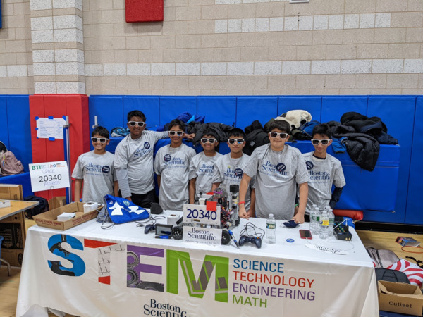
Even though I’ve been programming for quite a while, that was never really what made me enjoy programming in robotics specifically. I enjoyed it because something always seemed to break right before a match started, and it was up to the programmer to figure out how to fix it. Hence, programming in robotics has taught me how to solve problems quickly and stay calm under pressure.
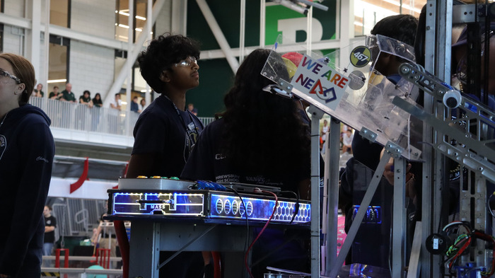
I eventually moved into FIRST Robotics Competition (FRC) in high school. While at Shrewsbury High School, I competed on Team 467, Center of Mass. Since starting high school, I have focused exclusively on the programming side of robotics. Currently, I am continuing my FIRST Robotics journey as part of Mass Academy’s own FRC program: Team 190, Gompei and the HERD.
Speech and Debate
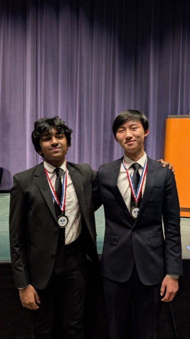
I’ve always had both introverted and extroverted tendencies, and that was the reason why I first joined the speech and debate team in 6th grade at Sherwood Middle School, although it was against my will. I competed in Original Oratory, where students write and deliver their own speeches, and Big Questions Debate, which explores questions at the intersection of science, philosophy, and religion. I continued competing in both events throughout 7th and 8th grades and served as the team’s president and captain in 8th grade.
At Shrewsbury High School, I moved into varsity Extemporaneous Speaking, an event in which competitors use research and a limited preparation time of 30 minutes to develop a 7 minute speech that answers a question about current events.
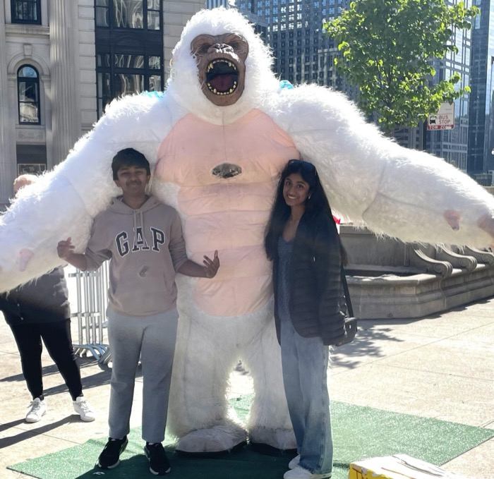
Delivering the speech without notes requires a combination of clear reasoning, knowledge of world affairs, and the ability to think quickly. The actual skills themselves really come from practicing: over the span of 2 years, I’ve given nearly 100 practice speeches to a variety of audiences.
I’ve competed in this event at nearly 20 tournaments all throughout Massachusetts. However, my most interesting and impressive performances have been at the National Catholic Forensic League (NCFL) Grand National Tournament in both 2025 and 2026. Now, while attending Mass Academy, I continue to compete nationally in extemporaneous speaking.
Computing
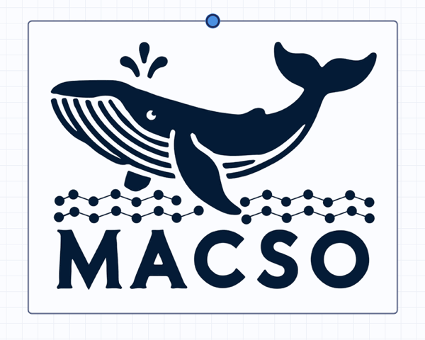
Outside of school, a lot of my free time goes toward competitive programming. I compete in the USA Computing Olympiad (USACO), which runs algorithmic contests throughout the year, and the American Computer Science League (ACSL), which pairs short written rounds with programming problems. I am also part of the team that runs the Massachusetts Computer Science Olympiad (MACSO), a statewide contest that brings hundreds of high school and college students together to solve problems online and in person, with the main goal of building a community of problem solvers in Massachusetts.
Most of the projects that I build on my own end up on my GitHub profile.
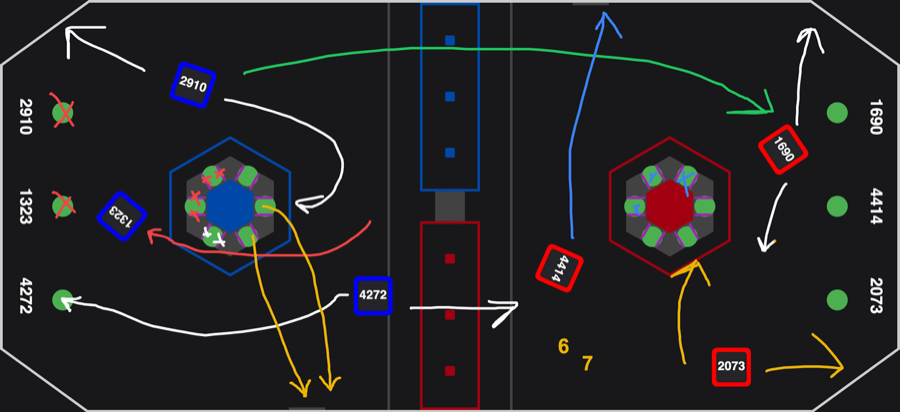
One of those projects is Strategy Board, a digital strategy whiteboard I wrote in Rust for FRC teams. An alliance only gets a few minutes between matches to plan, so instead of crowding around a physical whiteboard, drivers and scouts can sketch paths and assignments for all six robots on a shared digital field. Another is Gaze, a facial authentication system that my cousin and I built after realizing the gap in facial authentication on Linux.
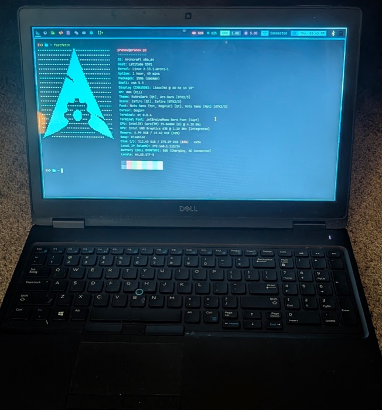
The rest of my time goes toward tinkering with the machine itself. I daily drive Arch Linux, so my setup is something I put together piece by piece rather than something that came preinstalled. Breaking it and then having to fix it has taught me more about how an operating system actually works than any tutorial ever did.
Fun Facts
-
I’ve been maintaining a Duolingo streak since November
2022, when I was in 7th grade.
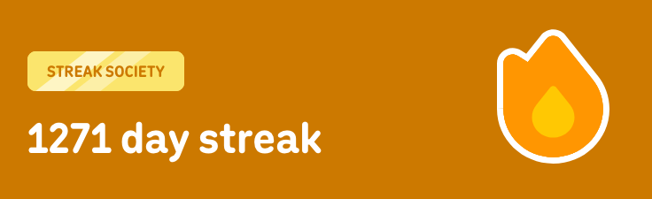
-
On a fifteen-second typing test, I average 162 words per minute on Monkeytype.
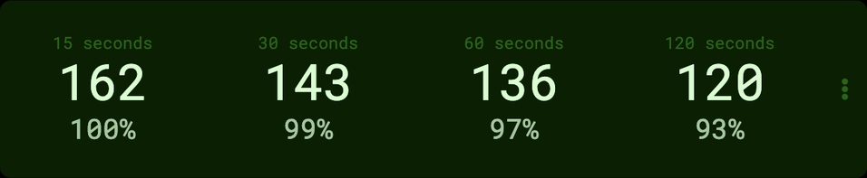
- There is an easter egg hidden somewhere on this site. Good luck finding it.